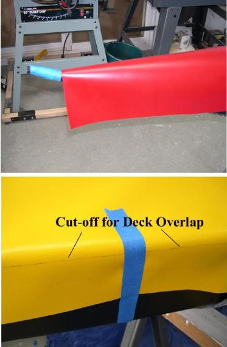
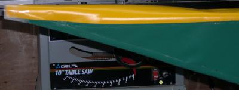

| Covering The Deck (3 of 5) | Menu Previous Page Next Page |
|  |
One-Piece Deck
3. Trim the deck skin at the point it intersects the stem tube. ( Symetrik) The cutoff is at this location to insure that the PVC will lay flat. On most kayaks, the deck skin will go to the ends.

4. Walk along the length of the kayak marking a line (pencil) at the base of the gunwale tube. This line will be the cut-off for the deck skin prior to gluing deck to hull. The overlap of the gunwales will be about 1 inch. ( Combi-Double).
|